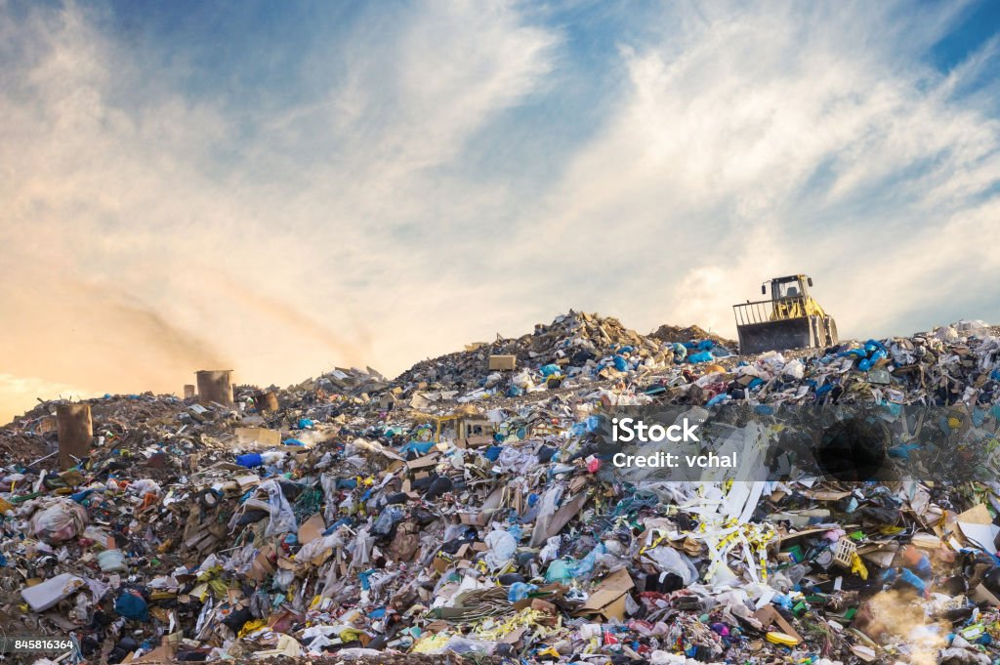
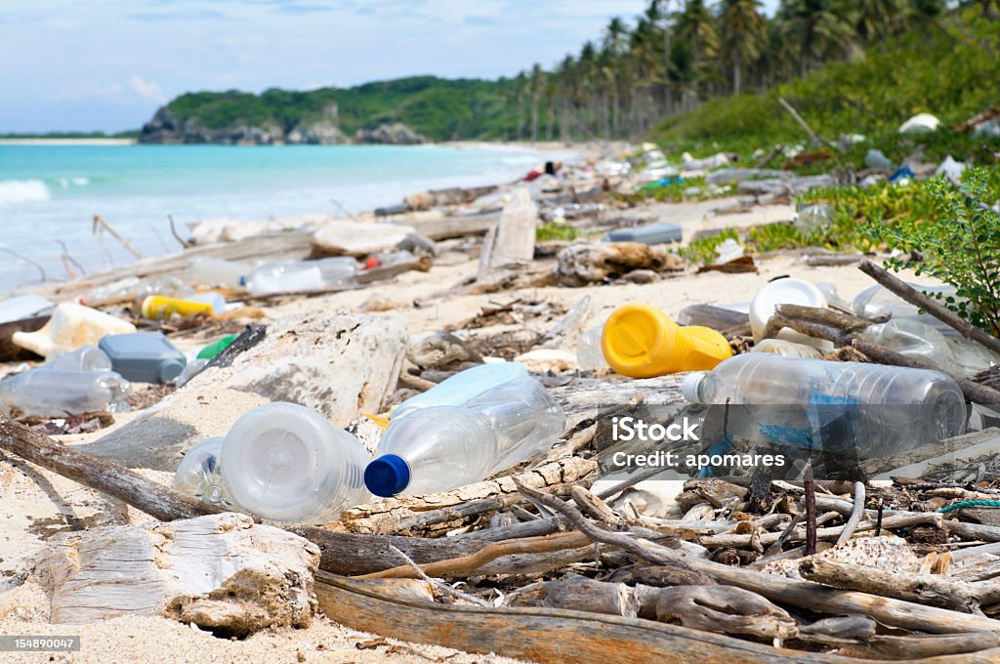

In United States, the landfills are the primary system for controlling the waste. Although, these landfills allow different types of waste to be disposed of, such as microprastics and toxic chemicals, to leak out of the trash and into the soil, gorundwater, and nearby waterways. This pollutes a lot of water and soils. These open landfill sites also allow greenhouse gasses, like CO2 and methane, to be released directly into the atmosphere.It is being said that 20% of the total methane emissions from human-related sources are produced from open waste landfill sites. (Methan is one of the largest contributors to climate change with a warming potential over 80 times greater than CO2)
Researchers have found that an estimated 19 to 23 million tons of plastic waste are dumped in our oceans annually, with a lot of different species having been found to have consumed toxic plastics and microplastics, primarily whales, sea turtles, and seabirds.
For example, a krill-obligate blue whale is said to ingest 10 million pieces of microplastic every single day. Prastic pollution is even becoming the daily diet for most of them and 90% of them ended up getting sick or death.
Some of this ocean plastic is entering the human food chain when we eat sea food that have consumed microplastics.
Human health is being deeply impacted by this lack of environmental accountability and awareness. Over 1000 chemicals used in the manufacturing of millions of different plastic products on the market today are classified as endocrine-disrupting and carcinogenic. They have been associated with some cancers, infertility, Alzheimer's, miscarriage, developmental issues and more.
The chemicals called PFAS are used in products like nonstick cookware, stain resistant clothing, and firefighting foam. When these items are dumped in landfills, it creates another pathway for these dangerous chemicals to enter the environment, where can ultimately poison us and all other living creatures.